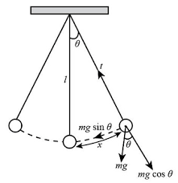
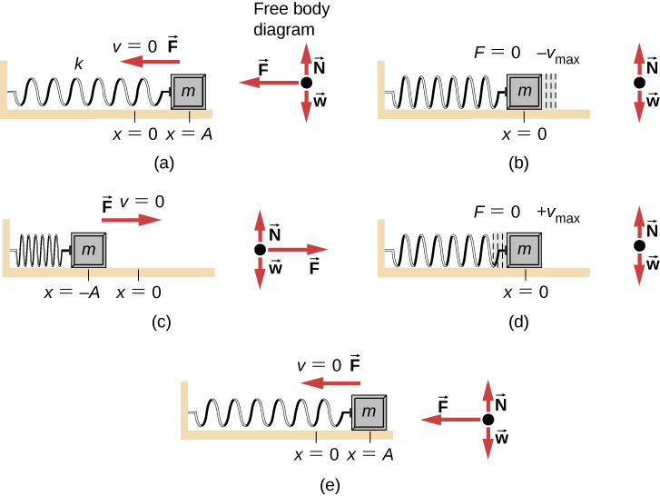

Oscillations arise when an object is subject to a force that acts to restore it to an equilibrium position. This type of force is called a restoring force.
A restoring force is a force that is always directed toward the system's equilibrium position and is proportional to the displacement from that position.
This is known as Hooke's Law, and it describes the restoring force in an ideal mass-spring system. The negative sign indicates that the force is directed opposite the displacement.
A simple pendulum provides another excellent example of a restoring force system. When a pendulum is displaced from its equilibrium position, gravity creates a restoring force that brings it back.
Where:
For small angles ($\theta < 15°$), we can approximate $\sin(\theta) \approx \theta$, giving us:
This shows that the restoring force is proportional to the displacement (angle), which is the key characteristic of simple harmonic motion.
For a simple pendulum, we can derive the mathematical form of simple harmonic motion. The restoring force component along the arc of motion is:
For small angles, $\sin(\theta) \approx \theta$, so:
The displacement along the arc is $s = L\theta$, where $L$ is the length of the pendulum. Therefore:
Substituting this into the force equation:
This has the form $F = -ks$ where $k = \frac{mg}{L}$. Using Newton's Second Law:
Which simplifies to:
Defining $\omega = \sqrt{\frac{g}{L}}$, we get:
This is the same form as the spring oscillator, confirming that a pendulum exhibits simple harmonic motion for small angles.
Combining Hooke's Law with Newton's Second Law gives:
Which simplifies to:
Defining $\omega = \sqrt{\frac{k}{m}}$, we write:
This differential equation defines SHM: the acceleration is proportional to and opposite the displacement.
Explore how the pendulum's motion depends on its length, mass, and initial displacement: